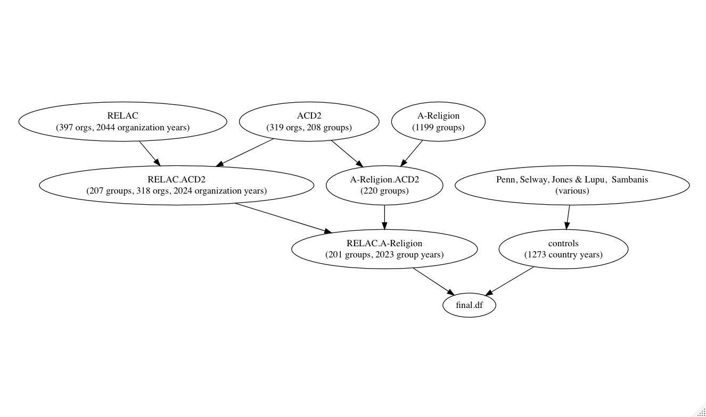
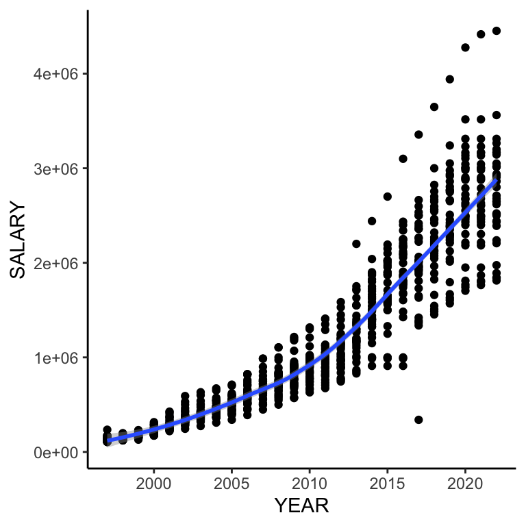

Basic quarto tutorial for 729B
0.0.0.1 Packages
Install and load the following packages for this tutorial
library(tidyverse)
1 What is Quarto
Quarto is the “new” version of RMarkdown. Quarto enables you to weave together content and executable code into a finished document. To learn more about Quarto see The Quarto Website.
The principal advantage of quarto over RMarkdown is that it will be maintained going forward (RMarkdown will not) and it accommodates languages other than R, so that when you venture into learning Python or other coding languages it can accommodate your needs.
The content of this basic tutorial is as follows:
What is Quarto: Section 1
Getting started with Quarto: Section 2
Using Quarto: Section 2.1
Basic Quarto: Section 3
New document: Section 3.1
Quarto document content: Section 3.2
Text: Section 3.2.1
Code: Section 3.2.2
Figures: Section 3.2.3
Assignment: Section 4
2 Getting started with Quarto
Begin by going to the Quarto webpage: The Quarto Website. From there, download the version for your operating system.
Once downloaded, go into your RStudio, then to preferences, then to the RMarkdown tab. Once there you can enable Quarto.
Once Quarto is enabled, you can create new Quarto documents by going to File>New File>Quarto Document.
2.1 Using Quarto
For some basic Quarto see this very helpful cheatsheet on Quarto Markdown Basics
The Quarto Website Guide provides a pretty comprehensive guide to its functionality.
Furthermore, once installed, Quarto can be used similarly to RMarkdown. Therefore, any information you don’t find on the Quarto website is likely found in one of these guides:The RMarkdown Cookbook, The RMarkdown Bookdown, or RStudio Guide to RMarkdown, and for quick tips see RMarkdown tips.
For an extended tutorial on how to use Quarto in R studio see, for example, this Quarto tutorial
Below you will be guided through enough basics to get you started. Then you can use the above guides to learn more.
3 Basic Quarto
3.1 New document
To begin a new document go to File > New File > Quarto Document The document file will have the extension qmd
3.2 Quarto document content
A Quarto document can contain text and code. It can also include images that are embedded or otherwise rendered.
3.2.1 Text
Text can be written directly into the document and will be rendered properly as shown here when the format is html or pdf.
Text can also be written into the Quarto document in LaTeX. However, the below LateX examples will only render in pdf (see source for the actual code)
In contrast, LateX math notation will render in either pdf or html
\(E = mc^{2}\)
3.2.2 Code
Code can be embedded into a document in chunks that are delineated by three “`” on each end of the code along with the information for what type of code is being used within curly brackets:
R code can also be written inline within a single quotation mark on either side, to do a number of things like figure out that 5+5 equals 10, such as here (see source).
When you click the Render button above a document will be generated that includes both content and the output of embedded code.
1 + 1[1] 2To see the exact code toggle to the “source” button in the upper left corner.
You can add options to executable code like this
[1] 4The echo: false option disables the printing of code (only output is displayed when a document is rendered).
You can also run analysis and display it in the report. Below are some descriptives from data on salaries in Indonesia.
=========================================================
Statistic N Mean St. Dev. Min Max
---------------------------------------------------------
SALARY 870 1,179,872.000 917,543.500 106,000 4,452,724
YEAR 870 2,009.816 7.454 1,997 2,022
---------------------------------------------------------This especially useful if you are in the process of collecting data and/or experimenting with methods as the output will draw on the latest file each time you render the document and save the new version of the rendered document in your folder.
3.2.3 Figures
Quarto documents can also embed images contained in a specified folder.
To add an image to a rendered document you can use the following markdown syntax:


The important thing to remember here is to make sure your picture is in a folder where quarto can find it.
You can also embed ggplot figures, tables and the like in a quarto document using code chunks. For example, Figure 1 further explores the changes in salaries in Indonesia by Province over time

For more see: Quarto Chapter on Figures
4 Assignment
1: Download all the requisite software.
2: Find this tutorial on github and download it so that you can examine the sourcecode
3: Take 1 of your current projects (class or paper), that includes some figures and some analysis and create a simple quarto file.